QA report · live Confideline · 2026-05-07
Полная проверка модерации: photo / stories / groups
Повторный live-аудит гибкой модерации по ТЗ Игоря: три режима premoderation, postmoderation, none, настройки фото, stories, визуального оформления групп и интерфейса постов групп.
Ожидание по ТЗ: premoderation не публикует контент до approve; postmoderation публикует сразу и проверяет позже; none публикует без ручной очереди. Для group avatar/cover после reject должен возвращаться предыдущий одобренный image. Для group posts запись должна скрываться, не удаляться, с reason/moderator metadata и возможностью повторного открытия.
Источник ожиданий: ТЗ из задачи + таблица Google “Таблица: типы модерации фото по точкам загрузки”, где описаны точки загрузки, видимость, действия при отклонении, авторская видимость и технические статусы.
Сводка для Игоря
| Приоритет | Зона | Факт | Ожидание | Куда смотреть |
|---|---|---|---|---|
| P0 | Stories moderation settings | В live admin `/en/admin/settings/stories` есть только один select storiesModerationMode. Отдельных настроек для stories photo и stories video нет. |
По ТЗ должны быть отдельные режимы для stories photo и stories video. | Settings model/view для stories; добавить/проверить отдельные поля photo/video moderation mode или уточнить ТЗ. |
| P1 | Gallery photo postmoderation | При photoGalleryModerationMode=postmoderation gallery IDs 830,831,832 попали в Pending, а не в active/published state. |
Postmoderation: фото видно сразу, затем может быть скрыто после проверки. | Photo moderation status for gallery uploads. |
| P1 | Group settings / posts | В `/en/admin/settings/groups` найдено поле groupPostModerationMode, хотя ТЗ говорит, что group posts не настраиваются через settings. |
Либо убрать/не использовать поле из settings, либо обновить ТЗ и интерфейсное описание. | Group settings form and group post moderation source of truth. |
| P2 | Group avatar/cover none | В режиме none avatar/cover uploads проходят как Approved/Approved, но строки остаются видимыми в admin media approvals. |
Без модерации не должно зависеть от очереди; если это audit history, нужно визуально отделить от pending/review queue. | `/en/admin/group/media-approvals`, status/filter semantics. |
| P2 | Group posts reopen | Hide post работает: post 14 стал Hidden, reason сохранен. Но action повторного открытия в sampled hidden row не найден. |
По ТЗ должны быть approve/hide/reopen tools. | `/en/admin/group/posts?groupId=10`, actions for hidden posts. |
Матрица проверок
| Контент | Настройка / route | Режим | Факт | Вердикт |
|---|---|---|---|---|
| Gallery photo | /en/admin/settings/photo | premoderation | IDs 827,828,829 стали Pending. | PASS |
| Gallery photo | /en/admin/settings/photo | postmoderation | IDs 830,831,832 стали Pending. | FAIL |
| Gallery photo | /en/admin/settings/photo | none | IDs 833,834,835 стали Approved/ActiveOrHidden. | PASS |
| Main profile photo | /en/admin/settings/photo | all modes | Upload/crop UI открывается, но новый photo ID не создается: page показывает From Photo Id must be an integer. | NOT PROVEN |
| Stories settings | /en/admin/settings/stories | configuration | В UI найден один общий Stories moderation mode; отдельных режимов для photo/video stories нет. | CONFIG GAP |
| Stories photo | user home stories carousel | postmoderation | На пользовательском экране видны карточки QA story postmoderation 1-3 в горизонтальной ленте сторис. Это доказывает user-side отображение на проверенном экране, но не доказывает видимость другому пользователю. | PARTIAL |
| Stories photo | user home stories carousel | none + postmoderation | На пользовательском экране одновременно видны карточки QA story none 1-3 и QA story postmoderation 2-3. Это доказательство отображения карточек в ленте, а не доказательство полного moderation lifecycle. | PARTIAL |
| Group avatar | /en/admin/settings/groups | premoderation | 3 попытки upload, admin rows Rejected. | PASS |
| Group cover | /en/admin/settings/groups | premoderation | 3 попытки upload, admin rows Rejected. | PASS |
| Group avatar/cover | /en/admin/settings/groups | postmoderation | 3 attempts, rows Approved/Approved. | PASS |
| Group avatar/cover | /en/admin/settings/groups | none | 3 attempts, rows Approved/Approved, но видны в media approvals. | PASS + WARN |
| Group update buttons | /en/admin/group/update?id=10 | moderated modes | Кнопки Approve logo и Approve cover есть. | PASS |
| Group posts | /en/admin/group/posts?groupId=10 | post UI | Страница открывается, 20 items, filters Active/Pending/Hidden, Hide action есть. | PASS |
| Group posts hide | hide-post-modal -> delete-post | manual moderation | Post 14 стал Hidden, reason QA hide reason 20260506-212020 сохранен; запись не исчезла. | PASS |
| Group posts reopen | /en/admin/group/posts?groupId=10 | manual moderation | Reopen/show action для hidden row не найден. | NOT PROVEN |
Evidence screenshots
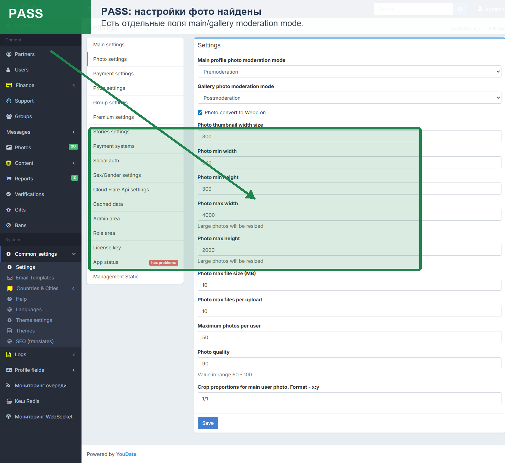
storiesModerationMode, отдельных photo/video moderation mode нет.Комментарий: это прямое расхождение с ТЗ, потому что фото и видео stories должны настраиваться отдельно.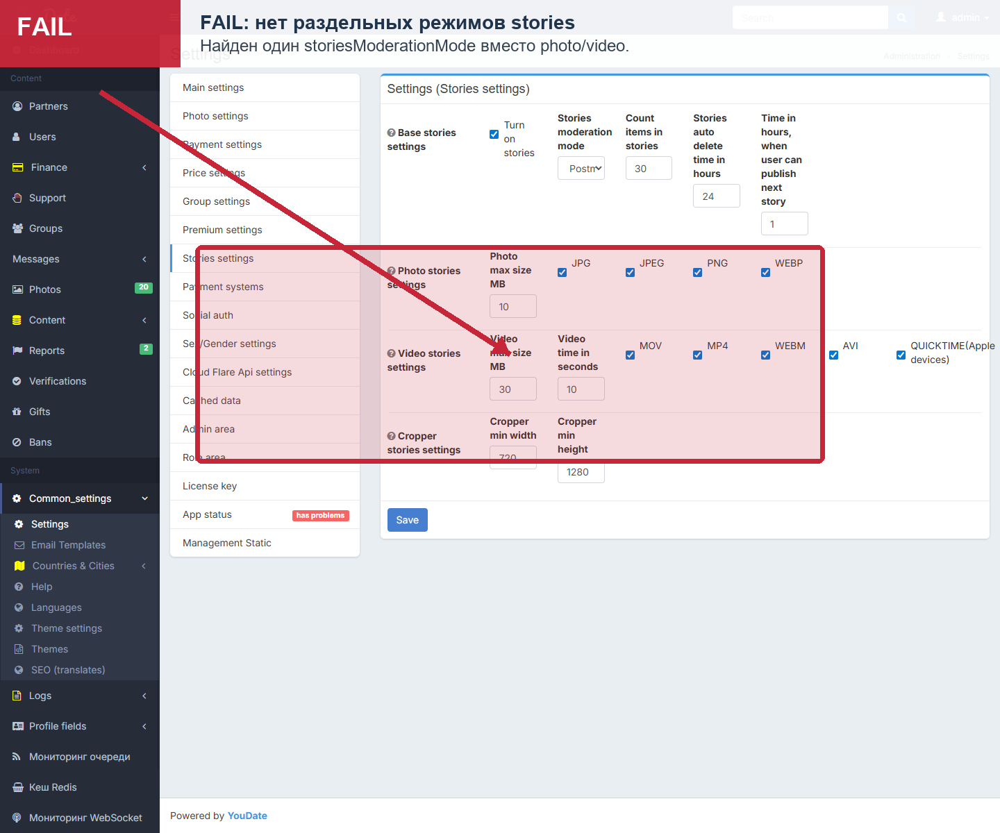
QA story postmoderation видны в ленте на пользовательском экране.Вывод: это не FAIL. Доказана видимость сторис на проверенном пользовательском экране. Для полного PASS нужно дополнительно проверить эту же сторис со стороны другого пользователя и отдельно пройти режимы premoderation / none.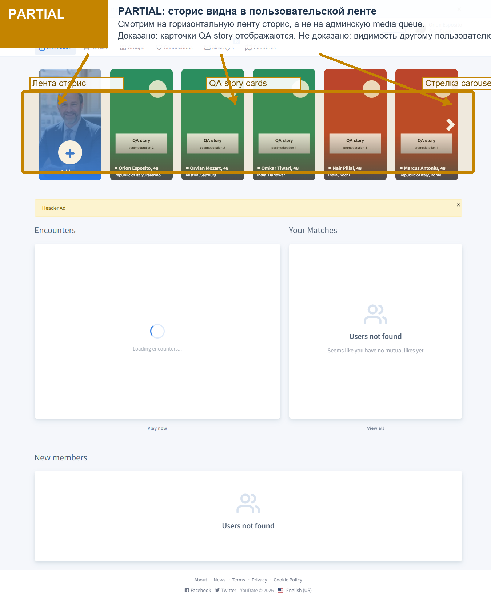
QA story none и QA story postmoderation.Вывод: это пользовательское evidence, на него можно смотреть. Оно доказывает отображение карточек в ленте на этом экране, но не закрывает проверку видимости вторым пользователем, ручного approve/reject и полного поведения всех режимов.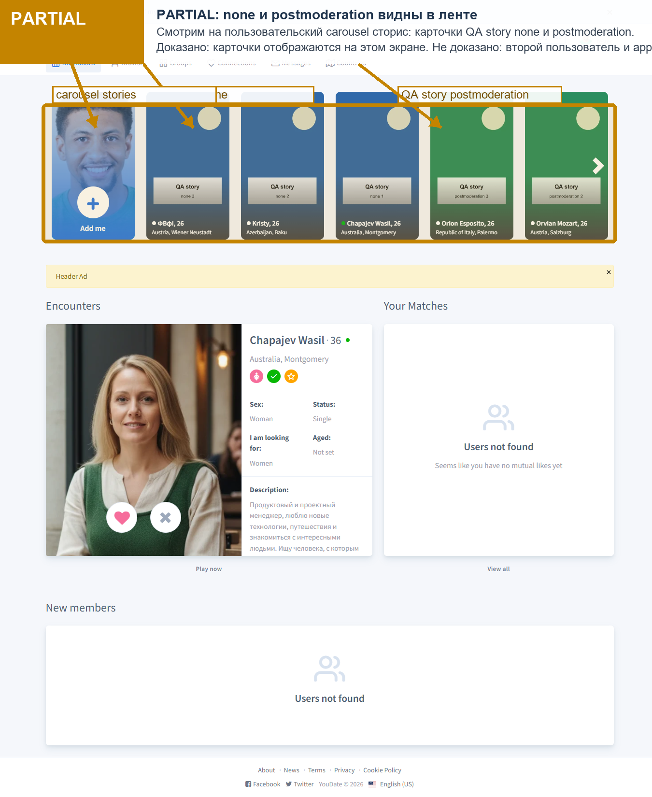
groupPostModerationMode.Комментарий: поле постов в settings конфликтует с ТЗ, где посты групп модерируются отдельным интерфейсом.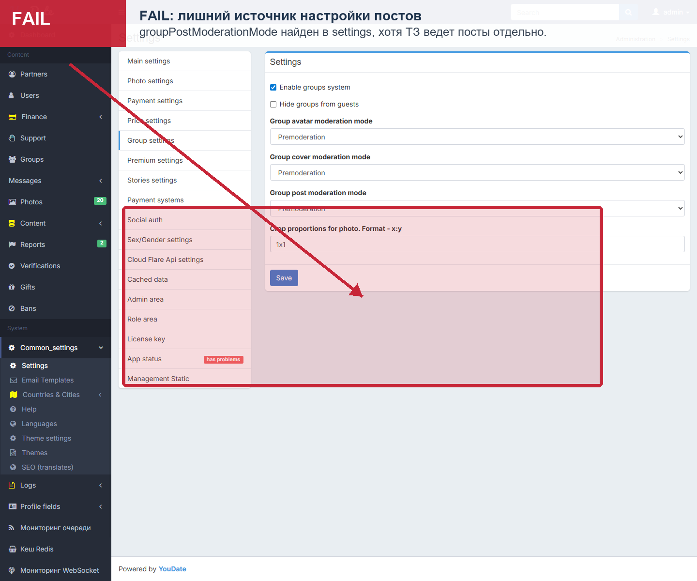
/en/admin/group/update?id=10 есть Approve logo и Approve cover.Комментарий: требуемые кнопки для визуального контента группы присутствуют.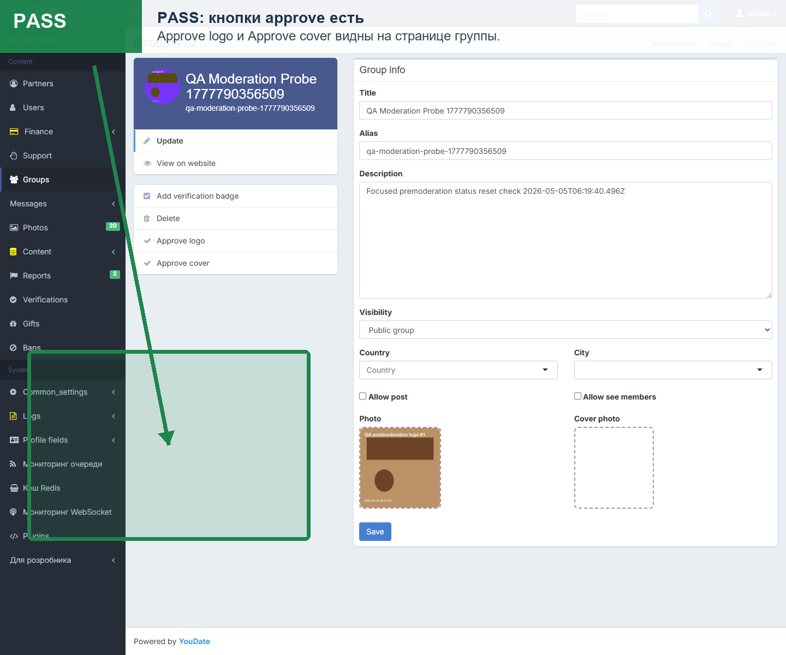
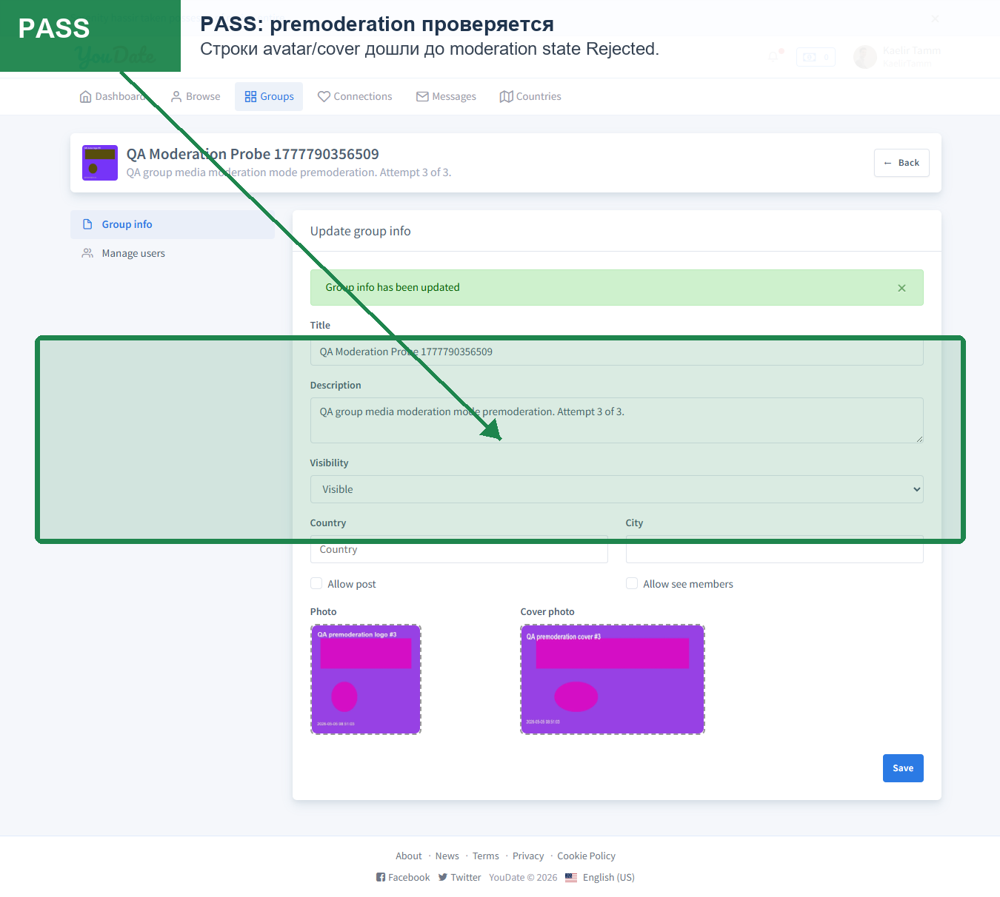
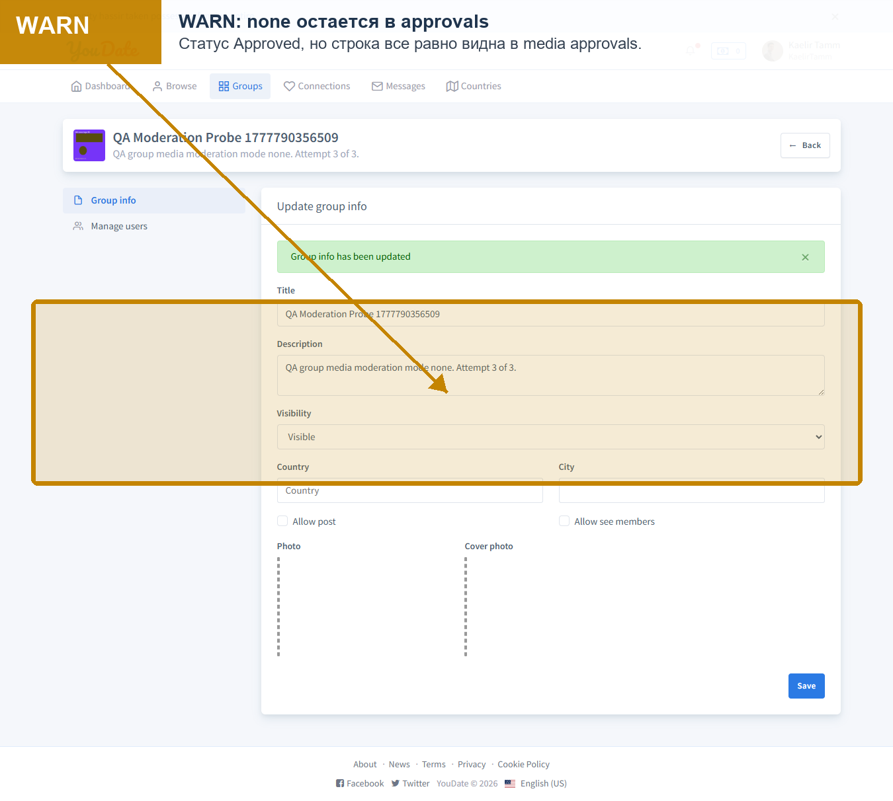
/en/admin/group/posts?groupId=10 открывает реальный список постов, фильтры Active/Pending/Hidden и кнопки ручных действий.Вывод: отдельная страница модерации постов групп реализована и доступна. Это значит, что базовый контур “посты не через settings, а через отдельный интерфейс” есть; дальше нужно чинить/доказывать полный цикл действий, особенно повторное открытие hidden post.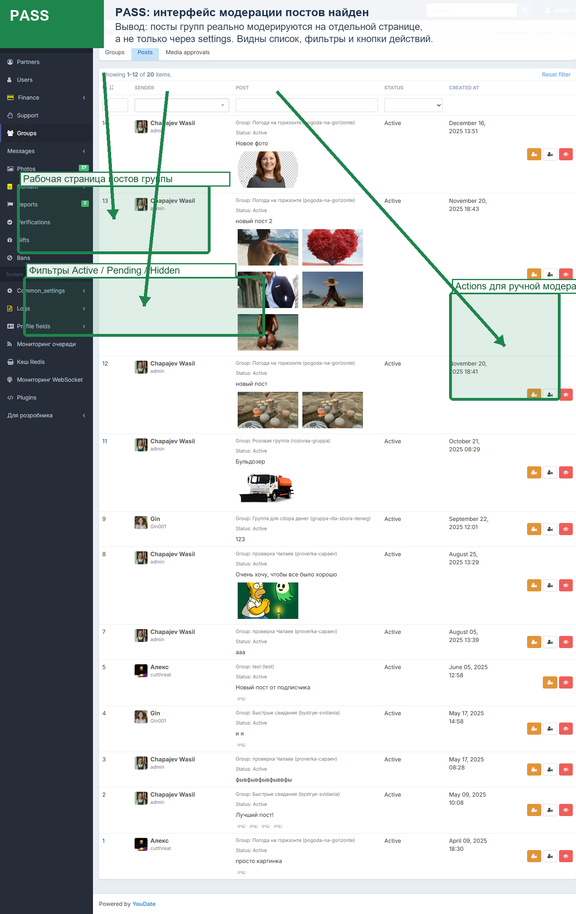
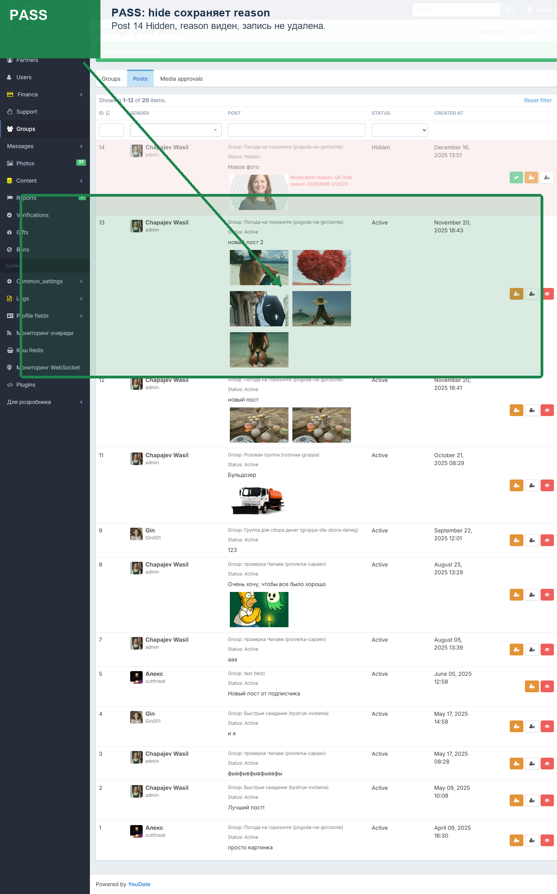
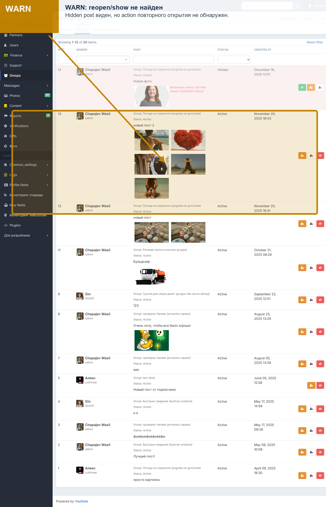
Прогоны и rollback
| Run | Status | Что покрыл | State / rollback |
|---|---|---|---|
moderation-surface-discovery-20260506-210453 | PASS | Settings fields, group update, group posts routes, media approvals. | Read-only |
photo-stories-moderation-full-20260507-000552 | FAIL | Photo gallery/main modes. Stories evidence from this run is excluded from product conclusions because it did not prove user-visible story behavior. | Photo/stories settings restored to baseline |
stories-moderation-full-20260507-002117 | EVIDENCE EXCLUDED | Excluded from stories behavior verdict: screenshots and queue rows did not show the actual user-facing story surface. | Stories settings restored to baseline |
group-media-moderation-full-20260507-000552 | PASS_WITH_WARNINGS | Group avatar/cover modes, 3 attempts each. | Settings restored to baseline |
group-posts-moderation-audit-20260506-212020 | PASS_WITH_GAPS | Group posts list, hide modal, hidden reason, no physical delete, reopen surface. | Post 14 intentionally left Hidden as moderation test evidence |